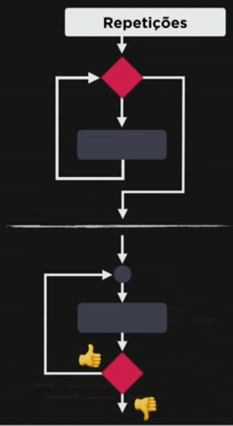
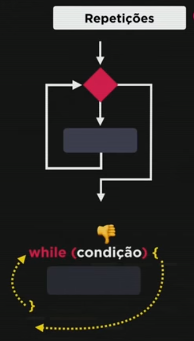
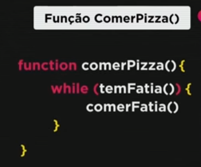
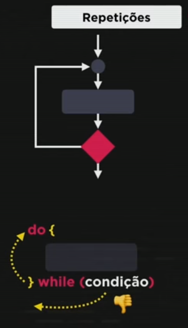

Repetições - while e do while
Estrutura do comando
A estrutura "while" é chamada estrutura de repetição com teste lógico no início e a a estrutura "do while" é chama estrutura de repetição com teste lógico no final.
É importante ressaltar a necessidade de se utilizar o incremento em laços de repetições, pois a falta dele irá gerar um laço infinito que travará o programa.
Devemos saber que o laço de repetição while pode não ser executado. Isso pode ocorrer quando, na primeira verificação da condição, ela for falsa. Neste cenário, o programa simplesmente irá “pular” para a execução da próxima instrução após o laço. Do/While – O do/while tem quase o mesmo funcionamento que o while, a diferença é que com o uso dele teremos os comandos executados ao menos uma única vez. DEVMEDIA
Comando "while"
Estrutura de repetição com teste lógico no início
Nessa estrutura, o programa irá executar o teste lógico e prosseguir enquando a condição for verdadeira. No exemplo abaixo no comando comer pizza, ele será executado enquando houver pedaços de pizza disponíveis para comer.
 
Comando "do while"
Estrutura de repetição com teste lógico no final
Nessa estrutura, o comando irá executar o bloco antes de executar o teste lógico e por esta razão ele é executado pelo menos uma vez.
